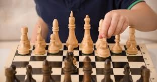

es una actividad educativa que busca desarrollar habilidades cognitivas y personales a través del juego de ajedrez, como el pensamiento estratégico, la concentración, la lógica y la resolución de problemas.
beneficia el desarrollo intelectual al mejorar habilidades como la concentración, la memoria, el razonamiento lógico y la planificación, además de fomentar la resolución de problemas, la toma de decisiones, la responsabilidad y la paciencia. También puede aumentar la autoestima, el espíritu deportivo y la capacidad de seguir reglas, al tiempo que ofrece una alternativa saludable a los videojuegos y fomenta la interacción social.
